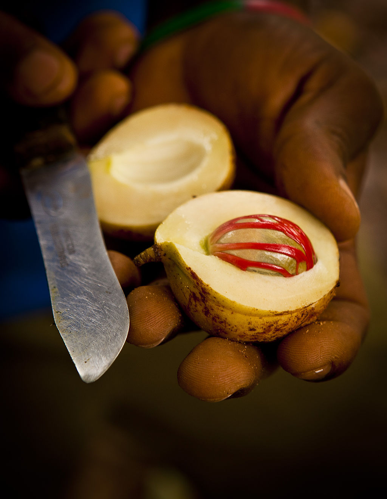

Nutmeg
Common Name: Nutmeg
Genus Species: Myristica fragrans
Family: Myristicaceae
Origin: Moluccas, especially the Banda Islands
Cultivation: Indonesia, Grenada, Saint Vincent and other Leeward Islands, Malaysia, Sri
Lanka, Trinidad
Description: The quintessential spice is nutmeg: it was a highly valued exotic flavor
source that grew only in the remote Spice Islands. It is not generally known that nutmeg
is the kernel of the apricot-like fruit of the tree, Myristica fragrans, and that it is
enclosed in a hard seed-case covered with an arillus; this soft membranous coat is the
spice, mace. It is astounding to learn how popular these two spices were in the
15th-17th centuries, especially when compared to how little they are appreciated today.
Nutmeg may have been a rare delicacy in ancient Greece and Rome, although there is
little evidence of its use in the food or drink of those times. Nutmeg became more
familiar to Byzantine traders who obtained it from Arabs, and its name may be derived
from the Arabic word “mesk”, which is related to the word musky, meaning fragrant. In
old French, “mug” meant musk, and the French term for the musk-nut, noix muguette,
became the English word nutmeg. Mace may have had a similar etymologic derivation. The
availability of the nutmeg in Europe increased once Crusaders learned to appreciate it
in Middle Eastern cooking, and Venetian spice traders then ensured that it became
familiar to banqueters of the 12th century. It was generally imported with its companion
from the Spice Islands, the aromatic clove. The exaggerated desire for nutmeg, mace and
clove by the 15th century made the Moluccan Islands a major target of Portugese
explorers. In 1512 an expedition was sent by Albuquerque, the commander of the Portugese
fleet in the strategic port of Malacca in the Malay peninsula, to locate the fabled
Spice Islands. The commander of two boats, Francisco Serrâo, was the first European to
gather nutmegs and cloves from their original source in a select few of the thousand or
so of islands in the Moluccan sea. Nutmeg grew mainly on two of the seven Banda Islands
in the southeast Moluccas, while cloves were found particularly in Ternate and Timore.
As an outcome of their fateful discovery, the Moluccan Islands remained under Portugese
control until these colonials were ousted by the Dutch in the first quarter of the 17th
century. The Dutch policy of harsh monopolistic source control resulted in nutmeg trees
being destroyed on all islands other than the precious plantations of Banda and Ambon.
The Dutch were eventually replaced by the British for a few years at the end of the 18th
century, but by that time the Spice Islands had yielded their unique spice trees to
Mauritius (controlled by the French), Malaya and the West Indies. Eventually, the
Caribbean island of Grenada became an important source of cultivated nutmeg trees. The
taste for nutmeg and mace has varied over the millennia. Although long used as a food
flavor in Asia, these spices were mainly appreciated for adding to alcoholic drinks in
ancient Rome. In medieval and renaissance banquets, exotic spices, including mace and
nutmeg, along with the popular cinnamon, were added in large amounts to various dishes.
Fashionable French gourmets would bring their own nutmeg graters to add their nutmeg to
appropriately improve on a wealthy host’s dinner. Such affectations generally
disappeared in the 18th century, when attention was shifted to the newly fashionable
coffee, chocolate and tobacco. Currently, the Dutch maintain a liking for nutmeg and
mace, whereas in the cuisines of most other European and American countries, these
flavors have a minor role. Perhaps European nutmeg, which comes from the Moluccan
Islands, is of better quality than U.S. nutmegs that are grown in Grenada. Furthermore,
ground nutmeg and pulverized mace rapidly lose their volatile oleoresins, and thus only
freshly ground specimens are of major gustatory value. Nutmeg is mostly used in cola
drinks, in confectionary and holiday dishes, such as eggnog. However, the more aromatic
mace is characteristically used in making sausages and other prepared meats, and in
donuts, where it provides a recognizable flavor. The former magical and panacea-like
properties have declined, and neither spice is utilized in medical practice today.
